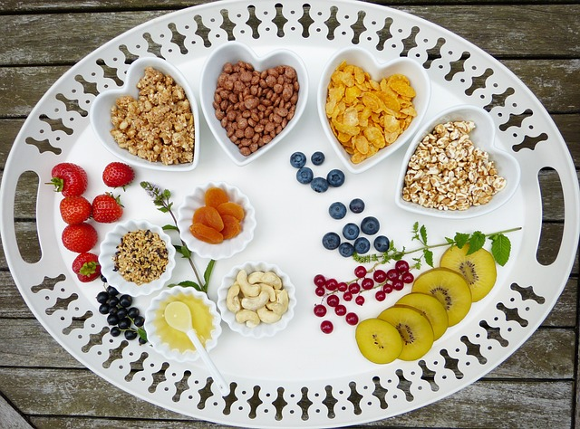

SOLUTION :
- Opt for lighter, nutrient-rich snacks and meals while studying. Incorporate foods that provide a steady release of energy, such as fruits, vegetables, whole grains, lean proteins, and healthy fats.
Examples include:
- Fresh fruit (e.g., apples, bananas, berries)
- Nuts and seeds (e.g., almonds, walnuts, pumpkin seeds)
- Greek yogurt with honey or granola
- Whole grain crackers with hummus or nut butter
- Vegetable sticks with guacamole or yogurt dip

These lighter options provide essential nutrients and energy without causing the drastic blood sugar fluctuations associated with heavy meals. Additionally, eating smaller, more frequent meals or snacks throughout the day can help maintain steady energy levels and prevent feelings of drowsiness.